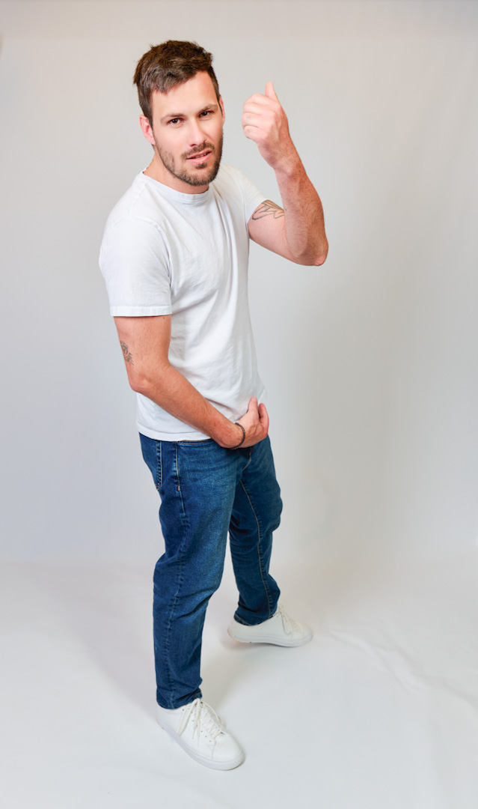
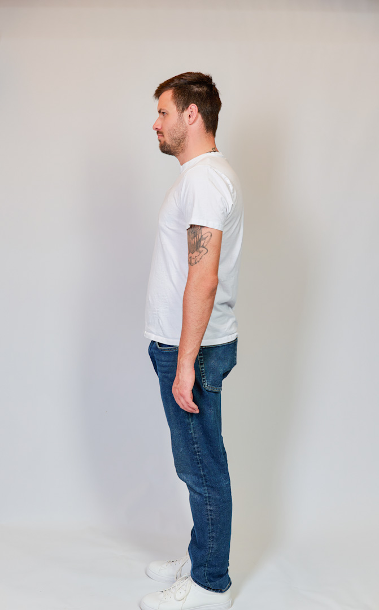
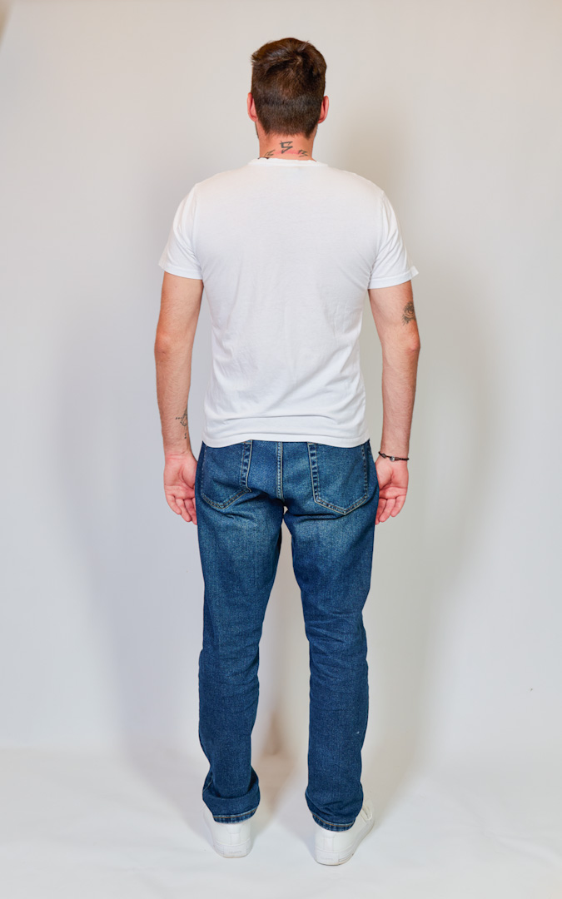
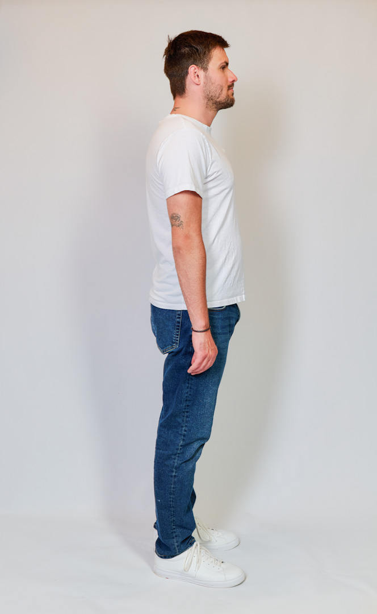

Agency Digitals · Polaroid Reference · Ulm
Pola Index
Reduzierte Model-Referenzen mit Fokus auf Proportion, Präsenz, Gesicht und natürlicher Wirkung. Kein Editorial-Ersatz, sondern ein klarer Casting-Blick auf Form, Haltung und Ausdruck. (Reminder- alle zu sehenden Bilder stammen aus einer reinen Hobby Produktion)
01
Primary
Reference
Reference
Name
Fabian Harmuth
Wohnort
Ulm
Alter
29
Größe
1,78 m
Schuhgröße
45
Visual Set · Six Frames
Agency
Preview
Die kleinen Polas laden sofort. Die hochauflösenden After-Dateien werden im Hintergrund weich nachgeladen. Doppelklick öffnet das Bild groß.

Frame 02
Frame 03
Frame 04
Frame 05Measurements · Casting Data
Maße
& Größen
Kompakte Übersicht für Anfragen, Castings und Produktionen. Die Angaben dienen als aktuelle Orientierung für Styling, Wardrobe und Set-Vorbereitung.
Körpermaße
Kopf
57 cm
Hals / Kragen
42 cm
Brust
104 cm
Taille / Bauch
94 cm
Hüfte
102 cm
Kleidergrößen
Jacke
L / 52
Hemd
40 / 41
Pullover
52 / L
T-Shirt
L
Polohemden
M
Jeans
W34 / L32
Schuhgröße
45
Sedcard · PDF